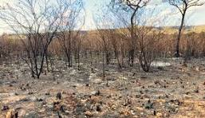
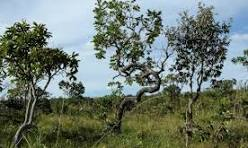

O segundo maior bioma do Brasil — rico, diverso e ameaçado.
Tropical sazonal, com seca definida e chuvas intensas.
Formações variadas como campo limpo, sujo e cerradão.
Lobo-guará, tamanduá, onça e inúmeras aves típicas.

O Cerrado é o bioma mais ameaçado do Brasil, sofrendo com queimadas, desmatamento e agropecuária.

Ações e projetos fundamentais para manter a biodiversidade do Cerrado viva.